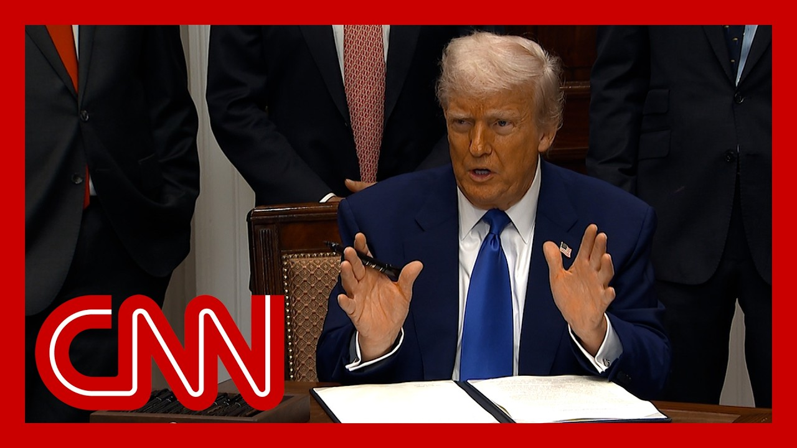

【为什么没有人对抗药品价格问题？情况如何？意义何在？均衡化是一个术语。这被称为均衡化。没人愿意提这个词。我并不是在抨击制药公司。我更多是在批评那些国家而非制药公司，因为它们被迫行事。但制药游说团体是最强大的游说力量。在这个国家，人们说制药游说团体。它和律师游说团体不相上下。它们拥有巨大权力。但从今天开始，美国将不再补贴外国的医疗保健，这正是我们过去所做的。我们一直在补贴其他国家的医疗保健，它们为同一种药物支付的费用只是我们支付的零头，而我们支付的费用是它们的许多倍。我们将不再容忍大型制药公司的暴利和价格欺诈。但话说回来，实际上是这些国家迫使大型制药公司做出那些它们自己可能都觉得不妥的事情，但它们却逃脱了惩罚。这些国家，尤其是欧盟，手段极其残酷。制药公司甚至向我讲述了这些故事。它们被迫行事的方式简直残忍。欧盟还在起诉我们所有的公司，苹果、谷歌、Meta。它们起诉我们所有的公司。最终，它们有偏向欧盟的法官，并因此获得150亿、170亿甚至200亿美元的赔偿。它们用这些钱来维持运营。但我可以告诉你们，这种情况不会再发生了。所以一直以来，我们一直在补贴世界其他国家，不仅仅是欧洲，而是全世界。据我所知，这是最困难的部分。我来讲个故事。我有一个朋友，他是个商人，非常非常顶尖的人物。你们大多数人可能都听说过他。他是个高度神经质但极其聪明的商人，严重超重。他服用一种减肥注射药物。他打电话给我说：“总统先生”——他现在这么称呼我。他以前叫我唐纳德，现在叫我总统先生。这很好，是尊重。但他是个强硬的人，聪明、非常成功、非常富有。我甚至不知道我们怎么会知道这件事，但因为他提到了“总统先生”。他问我：“我能问你一个问题吗？我在伦敦，刚为我服用的这种该死的减肥药付了钱。我说它没效果。他说他刚付了88美元。而在纽约，我要付1300美元。这到底是怎么回事？”于是我查了一下，发现这是同一个工厂、同一家公司生产的同一盒药。这是我在纽约买的完全相同的药丸。在伦敦，我付88美元；在纽约，我付1300美元。他是个很厉害的商人，但他对这种疯狂的情况并不熟悉。但他震惊了。这只是其中一个故事。我把这件事告诉了制药公司的代表，他是个非常聪明、很好的人。我们讨论了大约半小时。最后他说：“你抓住我了，你抓住我了。我无法再为这种荒谬的事情辩解了。”多年来他们一直用“研发”来辩解。我说：“研发？研发是为了他们的利益。”这只是其中一件事。其他国家会设定一个价格，制药公司必须接受，否则就无法在该国销售。我说：“那你们就走人，他们会回头找你们的。”但现在他们必须这么做。所以多年来第一次，我们将大幅降低处方药成本，并为美国带来公平。药品价格将大幅下降。如果你想到一种药有时贵十倍，降幅远不止59%，取决于你怎么分析。但可以从59%到80%，甚至90%。我在第一个任期内非常努力地降低价格，我记得我是唯一一个让价格全年下降的人，但降幅只有2%。我当时觉得这是件大事。而现在我们降了60%、70%、80%、90%。实际上更多，如果你从数学角度想的话。制药公司必须说：“很抱歉，但我们不能再对这些如此强硬的国家这样做了。”它们一直非常强硬、恶劣。今天是非同寻常的一天。这个问题，我从小在民主党长大，20年来每位民主党主要领袖都向美国人民承诺过。这是伯尼·桑德斯竞选总统的核心，他要消除欧美之间的这种差异。结果他们都没做到。这是政客们对选民做出的承诺，明知自己永远不必兑现。他们永远不会兑现，因为他们知道国会在很多方面被制药行业控制。国会每位议员、每位参议员，甚至最高法院每位大法官，至少对应一名制药游说者。据估计，制药行业在游说上的花费是第二大游说行业的三倍。所以这是一个人们谈论但无人敢碰的问题，因为它太敏感了。你知道，国会通不过。现在我们有一位言出必行、有勇气的总统。特朗普总统曾从制药行业拿钱——我想他们给了你1亿美元，但他不会被收买，不像这个国家的大多数政客。他站在这里为美国人民发声。我不知道。有些作家，比如伊丽莎白·沃伦或罗伯特·赖希，说特朗普总统站在寡头那边。但从来没有一位总统比特朗普更愿意对抗寡头。我非常为你骄傲，总统先生，为你的勇气，或者说不屈不挠的精神，以及你为美国人民站出来的意愿。我不想在这里粗鲁或冒犯。我想听听你对总统宣布降低处方药价格的看法，参议员。特朗普总统刚刚说他改善了奥巴马医改，这完全是错误的。他在第一个任期内多次试图废除奥巴马医改。而众议院共和党人本周正在推进他们的法案，这是特朗普总统要求的。这将使数百万美国人失去医疗保险。在上届政府中，民主党努力通过立法降低处方药价格并限制美国人的自付费用。所以拜登总统和参议院民主党人在上一届国会中在限制和降低药价方面取得了重大进展。如果这项行政命令对医疗保健和医疗成本有积极影响，那将是好事。但到目前为止，特朗普第一届政府的记录以及共和党人现在在国会推动的事情会适得其反，它们将大幅削减医疗补助，使数百万美国人失去医疗保险。】
Summary: Why doesn’t somebody fight the drug price.
摘要： 为什么没有人对抗药品价格问题？

⏱️ Estimated Reading Time: 12 min
Situation.
情况如何？
Meaning?
意义何在？
Equalization is a term.
均衡化是一个术语。
It's called equalization.
这被称为均衡化。
Nobody wants to mention that term.
没人愿意提这个词。
and I'm not knocking the drug companies.
我并不是在抨击制药公司。
I'm really more knocking the countries than the drug companies because, they're forced to do things.
我更多是在批评那些国家而非制药公司，因为它们被迫行事。
But the the drug lobby is the strongest lobby.
但制药游说团体是最强大的游说力量。
And in this country, they say the drug lobby.
在这个国家，人们说制药游说团体。
It's between that and lawyers.
它和律师游说团体不相上下。
And, they have a lot of power.
它们拥有巨大权力。
But starting today, the United States will no longer subsidize the health care of foreign countries, which is what we would do.
但从今天开始，美国将不再补贴外国的医疗保健，这正是我们过去所做的。
We're subsidizing others health care countries where they paid a small fraction of what for the same drug that what we pay many, many times more for and will no longer tolerate profiteering and price gouging from big Pharma.
我们一直在补贴其他国家的医疗保健，它们为同一种药物支付的费用只是我们支付的零头，而我们支付的费用是它们的许多倍。我们将不再容忍大型制药公司的暴利和价格欺诈。
But again, it was really the countries that forced Big Pharma to do things that frankly, I'm not sure they really felt comfortable doing, but they've gotten away with it.
但话说回来，实际上是这些国家迫使大型制药公司做出那些它们自己可能都觉得不妥的事情，但它们却逃脱了惩罚。
These countries, European Union has been brutal, brutal.
这些国家，尤其是欧盟，手段极其残酷。
And the drug companies actually told me stories.
制药公司甚至向我讲述了这些故事。
It was just brutal how they forced them.
它们被迫行事的方式简直残忍。
And European Union suing all our companies, Apple and Google, Meta.
欧盟还在起诉我们所有的公司，苹果、谷歌、Meta。
they're suing all of our companies.
它们起诉我们所有的公司。
They end up, they have judges that are, European Union centric and they get rewarded 15 billion, 17 billion, 20 billion.
最终，它们有偏向欧盟的法官，并因此获得150亿、170亿甚至200亿美元的赔偿。
And they use that to run their operation.
它们用这些钱来维持运营。
It's not going to happen any longer that I can tell you.
但我可以告诉你们，这种情况不会再发生了。
So what's been happening is we've been subsidizing other countries throughout the world, not just in Europe, throughout the world.
所以一直以来，我们一直在补贴世界其他国家，不仅仅是欧洲，而是全世界。
was the most difficult from what I understand.
据我所知，这是最困难的部分。
I mean, I'll tell you a story.
我来讲个故事。
A friend of mine who's a a business man, very, very, very top guy.
我有一个朋友，他是个商人，非常非常顶尖的人物。
Most of you would have heard of him.
你们大多数人可能都听说过他。
A highly neurotic, brilliant businessman.
他是个高度神经质但极其聪明的商人。
seriously overweight.
严重超重。
And he takes the fat-- the fat shot drug.
他服用一种减肥注射药物。
And he called me up and he said, president, he calls me.
他打电话给我说：“总统先生”——他现在这么称呼我。
He used to call me Donald.
他以前叫我唐纳德。
Now he calls me president.
现在叫我总统先生。
So that's nice.
这很好。
Respect.
是尊重。
But it's a rough guy.
但他是个强硬的人。
Smart guy, very successful, very rich.
聪明、非常成功、非常富有。
I wouldn't even know how we would know this, but because he's got comments that president.
我甚至不知道我们怎么会知道这件事，但因为他提到了“总统先生”。
Could I ask you a question?
我能问你一个问题吗？
What?
什么？
I'm in London and I just paid for this damn fat drug I take.
我在伦敦，刚为我服用的这种该死的减肥药付了钱。
I said it's not working.
我说它没效果。
He said, he said I just paid $88.
他说他刚付了88美元。
And in New York I pay $1,300.
而在纽约，我要付1300美元。
What the hell is going on?
这到底是怎么回事？
He said.
他说。
So I checked, and it's the same box made in the same plant by the same company.
于是我查了一下，发现这是同一个工厂、同一家公司生产的同一盒药。
It's the identical pill that I buy in New York.
这是我在纽约买的完全相同的药丸。
And here I'm paying $88 in London and New York.
在伦敦，我付88美元；在纽约。
I'm paying $1,300 now.
我付1300美元。
This is a great businessman, so.
他是个很厉害的商人。
But he's not familiar with this crazy situation that we have.
但他对这种疯狂的情况并不熟悉。
But he was stunned.
但他震惊了。
But it was just one of those stories.
这只是其中一个故事。
And I brought it up with the drug companies represented by somebody who's very, very smart, good person to.
我把这件事告诉了制药公司的代表，他是个非常聪明、很好的人。
And we all get about it for about half hour.
我们讨论了大约半小时。
And then finally he just said, because they can't justify it, he just said, look, you got me, you got me.
最后他说：“你抓住我了，你抓住我了。我无法再为这种荒谬的事情辩解了。”
I can no longer just they they've been justifying this crap for years.
多年来他们一直用“研发”来辩解。
They said, oh, it's research and development.
他们说：“哦，这是研发。”
And I said, well, research and development, should pay research and development to it's to their benefit.
我说：“研发？研发是为了他们的利益。”
It was just one of those things.
这只是其中一件事。
And the other countries would set a price and they'd meet the price and they'd say, if you don't meet the price, you can't sell it in our country.
其他国家会设定一个价格，制药公司必须接受，否则就无法在该国销售。
I said, well, then you walk away and you know, they'll call you back and they'll sell it in the country, but now they'll have to do that.
我说：“那你们就走人，他们会回头找你们的。”但现在他们必须这么做。
So for the first time in many years, we'll slash the costs of prescription drugs and we will bring fairness to America.
所以多年来第一次，我们将大幅降低处方药成本，并为美国带来公平。
Drug prices will come down by much more.
药品价格将大幅下降。
Really, if you think 59, if you if you think of a drug that is sometimes ten times more expensive, it's much more than the 59%, you know, depends on the way you want to analyze it.
如果你想到一种药有时贵十倍，降幅远不止59%，取决于你怎么分析。
But in one way you can analyze it that way.
但可以从59%到80%。
But between 59 and 80 and I guess even 90%.
甚至90%。
So when I worked so hard in the first term and if I got prices down, I remember I was the only one to ever get prices down for a full year, but I'd get them down like 2%.
我在第一个任期内非常努力地降低价格，我记得我是唯一一个让价格全年下降的人，但降幅只有2%。
And I thought it was like a big deal.
我当时觉得这是件大事。
Well, we're getting them down 60, 70, 80, 90%.
而现在我们降了60%、70%、80%、90%。
But actually more than that, if you think about it in a way, mathematically and Pharma has to say we're sorry, but I will not be able to do this any longer to these to these countries that have been so tough.
实际上更多，如果你从数学角度想的话。制药公司必须说：“很抱歉，但我们不能再对这些如此强硬的国家这样做了。”
They've been very tough, nasty.
它们一直非常强硬、恶劣。
This is, this is an extraordinary day.
今天是非同寻常的一天。
This is an issue that I, you know, I grew up in the Democratic Party, and every major Democratic leader for 20 years has been making this promise to the American people.
这个问题，我从小在民主党长大，20年来每位民主党主要领袖都向美国人民承诺过。
This was the fulcrum of Bernie Sanders runs for presidency, that he was going to eliminate this discrepancy between Europe and the United States.
这是伯尼·桑德斯竞选总统的核心，他要消除欧美之间的这种差异。
as it turns out, none of them were doing.
结果他们都没做到。
And it's one of these promises that politicians make to their constituents knowing that they'll never have to do it.
这是政客们对选民做出的承诺，明知自己永远不必兑现。
And the reason they'll never do it is because they know that Congress is controlled in so many ways by the pharmaceutical industry.
他们永远不会兑现，因为他们知道国会在很多方面被制药行业控制。
There's at least one pharmaceutical lobbyist for every congressman, every senator on Capitol Hill, and every member of the Supreme Court.
国会每位议员、每位参议员，甚至最高法院每位大法官，至少对应一名制药游说者。
By some estimates, three pharmaceutical companies.
据估计，制药行业在游说上的花费是第二大游说行业的三倍。
The industry itself spends three times what the next largest lobbyist spends on lobby.
所以这是一个人们谈论但无人敢碰的问题，因为它太敏感了。
So this was a this this was an issue that people talked about.
你知道，国会通不过。
Nobody wanted to do anything because it was radioactive.
现在我们有一位言出必行、有勇气的总统。
You know, you couldn't get it by Congress.
特朗普总统曾从制药行业拿钱——我想他们给了你1亿美元。
We now have a president who is a man of his word who has the courage.
但他不会被收买，不像这个国家的大多数政客。
President Trump was taking money from the pharmaceutical industry to I think they gave you $100 million, but he can't be bought, unlike most of the politicians in this country.
他站在这里为美国人民发声。
And he is standing here for the American people.
我不知道。
I don't know.
有些作家，比如伊丽莎白·沃伦或罗伯特·赖希，说特朗普总统站在寡头那边。
You know, there's there's writers I, Elizabeth Warren or Robert Reich who are saying that President Trump is on the side of the oligarchs.
但从来没有一位总统比特朗普更愿意对抗寡头。
There has never been a president more willing to stand up to the oligarchs than President Donald Trump.
我非常为你骄傲，总统先生，为你的勇气。
And I'm very, very proud of you, Mr. President, for your courage.
或者说不屈不挠的精神。
for, I’ll say, I don't want to be crude here or intestinal fortitude, or stiff spine and your your willingness to stand up for the American people.
以及你为美国人民站出来的意愿。
I don't want to get your reaction to the president's announcement on cutting prescription drug prices.
我不想在这里粗鲁或冒犯。
Senator.
我想听听你对总统宣布降低处方药价格的看法，参议员。
Well, President Trump just said that he's the one that improved Obamacare, which is actually flat out wrong.
特朗普总统刚刚说他改善了奥巴马医改，这完全是错误的。
He tried over and over to repeal Obamacare when he was president the first time.
他在第一个任期内多次试图废除奥巴马医改。
And House Republicans are moving ahead this week with their bill, which President Trump's asking for.
而众议院共和党人本周正在推进他们的法案，这是特朗普总统要求的。
That would cut millions of Americans off of health care.
这将使数百万美国人失去医疗保险。
In the last administration, Democrats worked hard to pass legislation that reduces prescription drug prices and caps the out-of-pocket costs for Americans.
在上届政府中，民主党努力通过立法降低处方药价格并限制美国人的自付费用。
So President Biden and Democrats in the Senate made significant progress in capping and reducing drug prices in the last Congress.
所以拜登总统和参议院民主党人在上一届国会中在限制和降低药价方面取得了重大进展。
If this executive order has a positive impact on health care and on health care costs, that would be a good thing.
如果这项行政命令对医疗保健和医疗成本有积极影响，那将是好事。